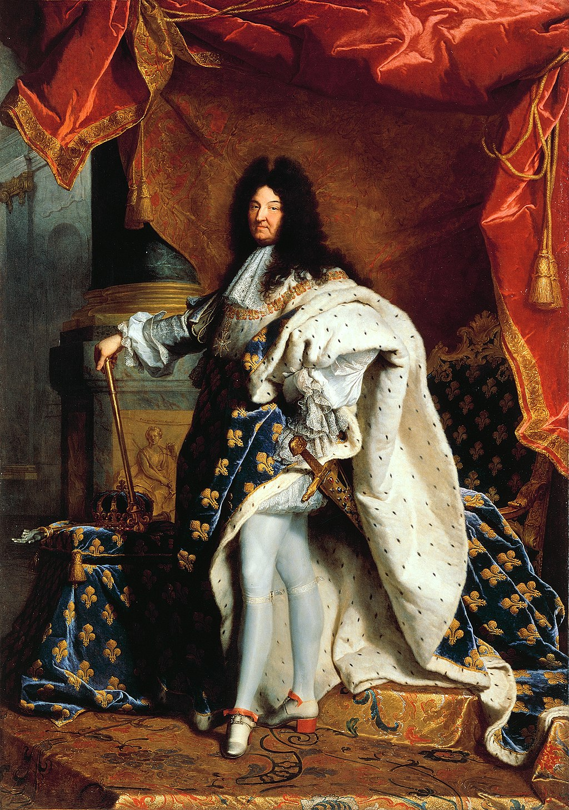

<head>
<meta charset="UTF-8" />
<meta name="keywords" content="drawing, painting" />
<meta name="description" content="drawings by Sunjy" />
<title>Sunjy</title>
<link rel="shortcut icon" type="image/x-icon" href="../../mImages/mCommon/favicon.ico" media="screen" />
<link rel="stylesheet" type="text/css" href="../../mCsses/mCommon/mCssA.css" />
<link rel="stylesheet" type="text/css" href="../../mCsses/mCommon/mCssB.css" />
<link rel="stylesheet" type="text/css" href="../../mCsses/mCommon/mCssC.css" />
<link rel="stylesheet" type="text/css" href="../../mCsses/mCommon/mCssD.css" />
<link rel="stylesheet" type="text/css" href="../../mCsses/mContent/mCssA.css" />
<link rel="stylesheet" type="text/css" href="../../mCsses/mContent/mCssB.css" />
<link rel="stylesheet" type="text/css" href="../../mCsses/mContent/mCssC.css" />
<link rel="stylesheet" type="text/css" href="../../mCsses/mContent/mCssD.css" />
</head>
<script type="text/javascript" src="../../mScripts/mContent/mContentAA.js" /></script>
<script type="text/javascript" src="../../mScripts/mContent/mContentAB.js" /></script>
<script type="text/javascript" src="../../mScripts/mContent/mContentAC.js" /></script>
<script type="text/javascript" src="../../mScripts/mContent/mContentAD.js" /></script>
<script type="text/javascript"></script> 
<script type="text/javascript">
document.write('<div class="mImgAbsolute"></div>');
/*
document.write('<p class="mFontSizeBColor" />From a white paper...</p>');
document.write('<table class="center"><tr><td>');
document.write('');
document.write('</td></tr></table>');
*/
</script>


<script type="text/javascript">
document.write('<p class="mFontSizeBColor" />Louis XIV of France</p>');
document.write('<p class="mFontSizeSColor" />“Louis XIV of France” by Hyacinthe Rigaud is a large portrait of the 63-year-old French King in his Coronation Robes. Louis XIV kept it hanging at Versailles, and it became the “official portrait” of Louis XIV.<br><br>This portrait established the standard and formula for future state portraits. Rigaud signed and dated this painting with the words “Painted by Hyacinthe Rigaud in 1701” on the column just above the goddess of Justice.<br><br>The king occupies the central space of the painting, whose composition consists of a column, the king, and the throne. The drama of the scene is accentuated by a heavy silk draped curtain.<br><br>The large marble pillar is an evocation of power that unites earthly and heavenly powers. The throne is upholstered in blue and embroidered with fleur-de-lys, which was a religious, political and dynastic, symbol in French heraldry.<br><br>The king embodies the majesty of choice because he does not bear his regalia. His crown sits on a stool covered with a blue fleur-de-lys drapery. The scepter of his grandfather is held upside down as a cane.<br><br>The sword of Charlemagne is visible. Wearing this sword with the coronation mantle is a statement of confidence and power.<br><br>King Louis XIV is clothed in a wig and his court garments. He wears a lace shirt, cuffs and he wears the necklace of the Order the Holy Spirit and the royal coat pinned high on the shoulder. <br><br>The red-heeled shoes adorned with diamond buckles, and silk stockings held by garters are used to highlight and feature the former dancer’s thin legs, which pleased the king.<br></p>');
document.write('<table class="center" /><tr><td>');
document.write('<br>This portrait established the standard and formula for future state portraits. Rigaud signed and dated this painting with the words “Painted by Hyacinthe Rigaud in 1701” on the column just above the goddess of Justice.<br><br>The king occupies the central space of the painting, whose composition consists of a column, the king, and the throne. The drama of the scene is accentuated by a heavy silk draped curtain.<br><br>The large marble pillar is an evocation of power that unites earthly and heavenly powers. The throne is upholstered in blue and embroidered with fleur-de-lys, which was a religious, political and dynastic, symbol in French heraldry.<br><br>The king embodies the majesty of choice because he does not bear his regalia. His crown sits on a stool covered with a blue fleur-de-lys drapery. The scepter of his grandfather is held upside down as a cane.<br><br>The sword of Charlemagne is visible. Wearing this sword with the coronation mantle is a statement of confidence and power.<br><br>King Louis XIV is clothed in a wig and his court garments. He wears a lace shirt, cuffs and he wears the necklace of the Order the Holy Spirit and the royal coat pinned high on the shoulder. <br><br>The red-heeled shoes adorned with diamond buckles, and silk stockings held by garters are used to highlight and feature the former dancer’s thin legs, which pleased the king.<br>" />');
document.write('</td></tr></table>');
</script>


